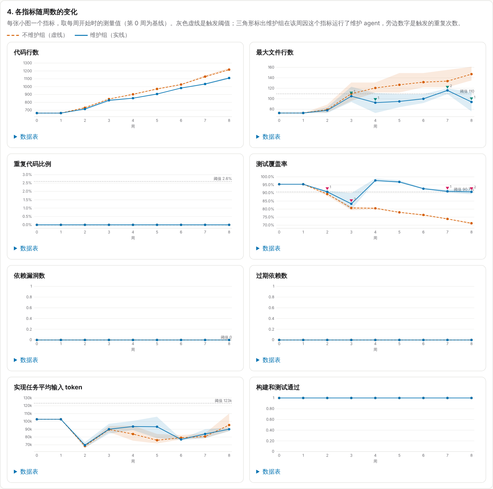
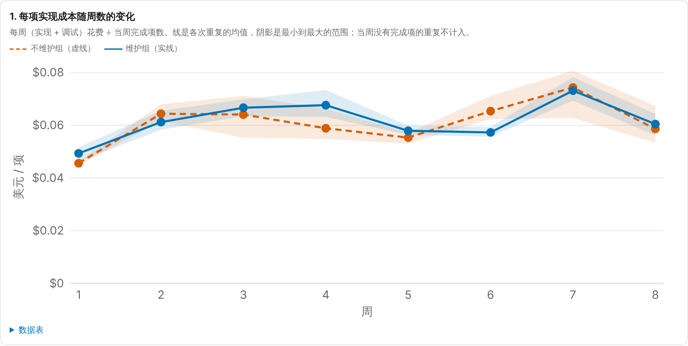
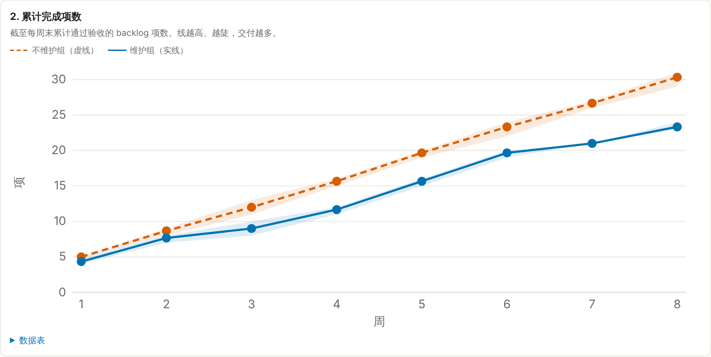

方法论：固定周预算下 coding agent 的维护与实现分配
从前提、理论模型、可检验预测，到实验设计和证据。页面中的数字由 python3 -m harness methodology 从 docs/data/ 的日志计算生成。
结论先行
- 理论。在“技术债随交付线性累积、一次维护把它清零”的模型下，维护能提高固定预算下的累计交付，当且仅当
Q = 2(R+1)·(m/c₀) ÷ (β·N²) < 1。
其中 β 是每多交付一项、单项成本的相对增幅，m/c₀ 是一次维护折合多少项实现，R 是维护次数，N 是期限内交付的项数。只要 β > 0，期限足够长时维护一定回本；β = 0 时永远不回本。
- 机制检验。真实运行中，维护确实把指标拉回了基线（M1、M3 成立）。但同一个 backlog 项在维护组并不更便宜：维护组 ÷ 不维护组 = 1.034，自助法 90% 区间 [1.013, 1.058]。也就是说，能被维护消除的那部分 β 不大于 0（M2 不成立）。
- 结论。按定理，此时维护在任何期限内都无法回本。实测维护组 8 周累计交付比不维护组少 7.0 项（3 次重复均值），每次重复都更少。前提不成立，限于本实验条件。
- 什么时候可以不维护。由定理可得跳过维护的阈值 β < β* = 4(m/c₀)/N²（只维护一次、时机最好时）。阈值管的是 β = αδ，即技术债让成本涨了多少，而不是引入了多少技术债；它随剩余工作量的平方下降。由同一模型还可以推出一条现场决策规则：现在维护，当且仅当（当前每项多花的比例）×（剩余项数）> m/c₀。用这条规则回看真实运行中阈值策略触发的 12 次维护，即使把全部成本上涨都算作可修复的技术债，值得做的也只有 0 次（§6.5）。
- 理论自身的检验。把三组数据（模拟“强”、模拟“弱”、真实运行）代入 Q，预测的输赢方向与实测一致，相对大小的排序也一致（§6.4）。
1. 研究问题
同一个代码库、同一份 40 项 backlog、同样的每周预算 B，共 8 周。比较两种分配策略：
- π₀（不维护）：全部预算用于实现，以及让当前这一项通过验收所需的调试。
- πM（阈值维护）：每周开始测量指标，越过阈值的指标触发对应的维护 agent，剩余预算用于实现。
要回答：π₀ 的每项实现成本是否逐周上升；πM 的 8 周累计交付是否多于 π₀。
2. 前提与假设
前提 P不维护会让技术债累积，技术债让后续实现更贵或更容易失败；因此把一部分固定预算用于维护，能在期限内换回更多交付。
P 是一个复合主张。把它拆成三个机制假设和两个结果假设，分别可以检验：
| 编号 | 内容 | 类型 |
|---|
| M1 累积 | 不维护时，债务指标（覆盖率、最大文件、重复代码、上下文开销）随交付变差 | 机制 |
| M2 代价 | 债务越高，同一项实现的期望成本越高（更多输入 token，更多失败与调试） | 机制 |
| M3 修复 | 维护 agent 能把对应指标拉回基线附近 | 机制 |
| H1 | π₀ 的每项成本逐周上升 | 结果 |
| H2 | πM 的 8 周累计交付多于 π₀ | 结果 |
逻辑关系：P 成立需要 M1、M2、M3 同时成立；H1 是 M1 与 M2 的可观测后果；H2 还取决于维护本身的成本和期限长短（§3）。所以 H1 成立推不出 H2，而 M2 不成立足以推翻 P。
因果图。实线是前提 P 主张的路径；虚线是混杂：backlog 按固定顺序排列，后面的项本身可能更大，它和“越往后债务越多”同时发生，单看成本随周数上升无法区分两者。§4 用同一项在两组之间的配对比较来切断这条混杂。
3. 理论模型：定理与证明
3.1 设定
把 8 周看成一个总预算 S = T·B，比较两种策略交付 N 项各需要多少钱。模型假设：
- A1 固定预算。期限内总预算 S 固定。周颗粒度和“剩余不足一个上限即结束本周”造成的作废先忽略（§3.6 讨论）。
- A2 债务累积。不维护时，交付第 k 项时的债务 Dk = δ·k。
- A3 成本随债务线性上升。第 k 项的期望成本 ck = c₀(1 + αDk) = c₀(1 + βk)，β = αδ。期望成本包含失败后的调试：失败率随债务上升的部分并入 α。
- A4 维护清零。一次维护花费 m，把债务降到 0。
- A5 项目同质。各项的基础成本都是 c₀，成本变化只来自债务。
3.2 三个引理
引理 1（交付与成本等价）设策略 x 交付 N 项的总成本为 Cx(N)，对 N 严格递增；预算 S 下交付 Nx = max{N : Cx(N) ≤ S}。若在相关范围内 CM(N) < C₀(N)，则 NM ≥ N₀；若 CM(N) > C₀(N)，则 NM ≤ N₀。
由定义 C₀(N₀) ≤ S。若 CM(N₀) < C₀(N₀) ≤ S，则 N₀ 在 πM 下可行，故 NM ≥ N₀。另一方向对称。所以“维护能否多交付”等价于“维护能否降低交付同样项数的总成本”。∎
引理 2（不维护的总成本）
C₀(N) = Σk=1..N c₀(1 + βk) ≈ c₀(N + βN²/2)
等差数列求和，Σk = N(N+1)/2 ≈ N²/2。∎
引理 3（维护 R 次、间隔均匀的总成本）
CR(N) ≈ c₀(N + βN²/(2(R+1))) + Rm
R 次维护把 N 项分成 R+1 段，每段 L = N/(R+1) 项。每段从零债务开始，由引理 2 成本为 c₀(L + βL²/2)。乘以 R+1 段，利用 (R+1)L = N、(R+1)L² = NL，再加上 R 次维护费用即得。∎
3.3 定理：回本条件
定理在 A1–A5 下，均匀维护
R ≥ 1 次能提高累计交付，当且仅当
m/c₀ < βN² / (2(R+1))，即 Q ≡ 2(R+1)(m/c₀) / (βN²) < 1
由引理 2、3，C₀(N) − CR(N) = c₀βN²/2 · (1 − 1/(R+1)) − Rm = c₀βN²R/(2(R+1)) − Rm。它大于 0 当且仅当上式成立。再由引理 1 得交付结论。∎
读法：m/c₀ 是一次维护“折合多少项实现”；右边是每次维护平均能省下的实现成本（同样以项计）。省下的量随 N² 增长，因为债务对后面每一项都起作用。
3.4 推论
推论 1（维护次数）若 R = 1 时 Q ≥ 1，则任何 R ≥ 1 都不回本。最优次数 R* ≈ N·√(β / (2m/c₀)) − 1。
净收益除以 R 等于 c₀βN²/(2(R+1)) − m，随 R 递减；在 R = 1 处不为正，则处处不为正。对净收益关于 R 求导并令其为 0 得 R*。∎
推论 2（最短回本规模）单次维护回本所需的最少交付项数 N* = √(4(m/c₀)/β)；维护 R 次时 N*R = √(2(R+1)(m/c₀)/β)。
推论 3（期限）设每周交付
v 项、每周维护
r 次，则
N =
vT、
R =
rT，
Q(T) = 2(rT+1)(m/c₀) / (βv²T²) ≈ 2r(m/c₀) / (βv²T)（T 较大时）
只要
β > 0，
Q(
T) 随期限下降并终将小于 1，回本期限
T* 存在；
β = 0 时
Q = ∞，不存在回本期限。所以前提 P 的真正问题不是“维护值不值”，而是“
β 是否大于 0，以及期限是否超过
T*”。
推论 4（稳健方向）以下偏离都只会减少维护的收益：维护间隔不均匀（固定 R 时，各段长度平方和在均匀时最小）、维护只部分修复债务、部分成本增长与债务无关而无法被维护消除。因此用“均匀间隔、完全修复、把全部成本增长都算作可修复债务”算出的 Q 是偏向维护的乐观值：据此得到 Q > 1 时，“维护不回本”的结论在这些偏离下依然成立；反过来 Q < 1 时还需要额外证据。
推论 5（跳过维护的阈值）维护
R 次不划算，当且仅当
β < β*R = 2(R+1)(m/c₀) / N²；对所有 R 都不划算，当且仅当 β < β* = 4(m/c₀) / N²
这是定理的移项，后半句由推论 1 得出。三点读法：
- 阈值管的是 β = αδ。δ 是每项引入的技术债，α 是技术债让成本上涨的敏感度。指标变差（δ > 0）而成本不涨（α = 0）时，β = 0，不需要维护。
- 阈值随 N² 下降：剩余工作越多，越小的 β 也值得维护。所以“低于阈值就不维护”只对给定的期限成立。
- 本实验：β* = 0.87%/项（单次最佳时机），按实测维护频率为 2.17%/项；β 的上界 0.95%/项，可修复部分约为 0。
推论 6（现场维护规则）设上次维护以来已交付
k 项，当前单项成本比干净状态贵
βk，此后还要交付
Nrem 项。现在维护一次划算，当且仅当
βk · Nrem > m / c₀
即“每项多付的利息 × 剩余项数 > 本金”。
不维护时，剩余各项成本为 c₀(1 + β(k+j))，j = 1..Nrem；现在维护后为 c₀(1 + βj)，外加 m。两者之差为 c₀βkNrem − m，大于 0 即得。∎
这条规则只需要两个可观测量：当前单项成本相对干净状态的溢价 βk（可以在同类任务上直接测），以及剩余工作量。它说明：临近结束时（Nrem 小）不该维护；同样的溢价，在长项目早期就值得维护。按指标阈值触发的策略不看剩余工作量，也不看成本是否真的上涨，所以会在不划算的时候触发。
推论 7（成本增长的形态）
| 情形 | 单项成本 | 累计实现成本 | 每周交付 |
|---|
| β = 0 | 恒定 c₀ | 线性：c₀N | 恒定 |
| β > 0，不维护 | 线性上涨 c₀(1+βk) | 二次：c₀(N + βN²/2) | 逐周下降 |
| β > 0，每 L 项维护一次 | 锯齿形，有上界 | 线性，斜率 c₀(1 + βL/2) + m/L | 恒定，但低于 β = 0 时 |
维护的作用是把二次增长拉回线性增长，代价是一个常数。最优间隔与对应的最低平均单项成本为
L* = √(2(m/c₀)/β)， 平均单项成本 = c₀(1 + √(2β·m/c₀))
每段 L 项的成本为 c₀(L + βL²/2) + m，除以 L 得平均单项成本 c₀(1 + βL/2) + m/L。对 L 求导令其为 0 得 L*，代回得最小值。∎
代入真实运行（取 β 的上界）：不维护时，二次项让约 30 项的累计成本比线性多出约 14.4%；在中点维护一次后，加上维护费用，溢价约为 13.8%，几乎没有差别。最优间隔约 20.5 项，8 周约 30 项里至多容纳一次。实测单项成本在 0.05–0.065 美元之间，累计成本基本是线性的。
3.5 失败通道
若第 k 项首次通过率为 p(Dk)，每次调试成本约为实现的 λ 倍，则期望成本约为 c₀[1 + λ(1 − p(Dk)) + …]。把 p 在 D = 0 处线性化，失败率随债务上升的部分就成为 β 的一个组成部分，定理形式不变。
3.6 模型没有包含的
- 周颗粒度与作废。每周剩余不足一个上限即结束，约 30% 预算作废。两组的作废比例接近（真实运行：不维护组 28–32%，维护组 28–31%），对比较的影响是二阶的。
- 维护占用整周预算的离散效应。一次维护可能让当周少开一项。这使维护在实际调度中比模型中更吃亏，方向同推论 4。
3.7 线性假设的边界
A2、A3 假设技术债线性累积、成本线性响应。现实中可能存在临界点：文件或上下文大到超出 agent 能有效处理的范围；模块纠缠到改一处坏多处，失败率突然上升。越过临界点时 β 会跳变，按线性模型算出的阈值和回本期限都会低估风险。本实验离这种区域很远：单次实现会话只用 7–10 万 token，173 个会话验收失败 0 次，所以无法回答临界点在哪里。
4. 从理论到可检验预测
| 预测 | 检验什么 | 怎么测 |
|---|
| T1 | M2（在控制项目大小后） | 同一个 backlog 项，比较维护组与不维护组的成本（各次重复取均值后求比值）。若维护降低了债务且 M2 成立，比值应小于 1。 |
| T2 | H1 | 不维护组单项成本对项编号做回归，斜率除以截距得 β̂。它混有项目大小效应，只能作为可修复 β 的上界。 |
| T3 | 定理 | 用 β̂、实测 m/c₀、R、N 计算 Q。Q > 1 预测维护组交付更少。 |
| T4 | H2 | 比较两组 8 周累计交付，逐次重复看。 |
判定规则（三分类）。前提成立：维护组累计交付在每次重复中都多于不维护组（范围不重叠），且 T1 显示维护组单项更便宜。前提不成立：维护组在每次重复中都更少。其余情况：数据不足以判断。
诚实披露：运行前固定的是设计、预算规则、阈值和三分类本身（见 PLAN.md）；上面这条判定规则在写报告时才明确写出。本页的理论模型、Q 和回本期限分析是在看到数据之后写的，属于解释性分析，不是预先登记的检验。理论在模拟数据上的预测（§6.4）可以当作对推导本身的检查，因为模拟的因果结构是已知的。
5. 实验设计
- 处理变量：分配策略 π₀ / πM。
- 控制不变：同一起点（标签
site-v0，提交 4a0ea0c）；同一 backlog 顺序；同一模型 claude-sonnet-5-5；同一提示；同一周预算和单项上限（来自同一次校准）；每个任务一次全新会话（空 HOME，无记忆）；同一评估流程（验收测试从原始副本恢复）。
- 重复：每组 3 次，随机性来自模型。
- 预算规则：6 个校准任务得到单项平均成本 c̄ 和 80 分位数；周预算 = 4.5c̄，单项上限 = 1.5 × 80 分位数。剩余不足一个上限时本周结束；会话跑完为止，超过上限记为超支；周超支从下周扣除。验收失败最多调试 2 次，仍失败则回滚。
- 度量：token 用量从 CLI 输出中逐轮汇总，并与 CLI 的累计值逐一核对；成本按官方价格表计算。指标：代码行数、最大文件行数、重复代码比例、行覆盖率、依赖漏洞数、过期依赖数、构建与测试是否通过、实现任务平均输入 token。
- 维护触发：相对第 0 周基线的阈值（覆盖率相对下降 > 5%，重复比例相对上升 > 30%，最大文件相对上升 > 50%，平均输入 token 相对上升 > 20%，漏洞数 > 0）。
- 模拟的作用：在系数已知的模型里运行同一套调度循环，用来检查调度规则和本页的理论推导。模拟结果只反映假设，不能检验前提。
细节见 PLAN.md。
6. 证据
6.1 M1 与 M3：维护确实改变了指标
第 8 周末：覆盖率，不维护组 68–70%，维护组 92–97%；最大文件行数，不维护组 144–182，维护组 88–104；代码行数从 664 增长到不维护组 1261–1302、维护组 1147–1191。不维护时指标变差（M1 成立），维护把它们拉回阈值附近（M3 成立）。

真实运行，各指标随周数的变化（橙色虚线：不维护组；蓝色实线：维护组；三角形：触发维护的周）。
6.2 M2：同一项在维护组并不更便宜（T1）
两组都完成的 23 项（B01–B23）：维护组成本 ÷ 不维护组成本 = 1.034，自助法 90% 区间 [1.013, 1.058]（描述性区间，不作显著性判断）。维护组的代码更“健康”，同一项反而略贵约 3%。可被维护消除的 β 估计不大于 0：M2 不成立。
失败通道同样没有出现：173 个会话中验收失败 0 次，调试 0 次。首次通过率不随债务变化。
6.3 H1：成本上升来自项目大小（T2）
不维护组单项成本对项编号回归：c₀ = 0.0517 美元，β̂ = 0.95%/项，90% 区间 [0.39, 1.61]（91 个项样本）。成本确实随项编号上升（H1 在描述层面成立），但两组的上升幅度接近，项编号与成本的相关系数为 0.31。结合 6.2，上升来自后面的项本身更大，不是债务。

真实运行，每项实现成本随周数的变化。两组走势接近。
6.4 代入定理（T3），并用模拟检查理论
为了偏向维护，下面把不维护组成本上升的全部都当作可修复债务（推论 4），即用 β̂ 作为 β。
| 数据集 | β̂（%/项） | m/c₀ | R（次/系列） | N（不维护组） | Q（实测策略） | Q（单次维护） | 预测 | 实测 Δ 交付 |
|---|
| 模拟·技术债影响强 | 6.21 | 1.32 | 5.3 | 16.0 | 1.05 | 0.33 | 接近持平 | -2.3 |
| 模拟·技术债影响弱 | 1.03 | 1.52 | 6.3 | 20.3 | 5.27 | 1.44 | 维护组明显更少 | -6.7 |
| 真实运行 | 0.95 | 2.00 | 4.0 | 30.3 | 2.29 | 0.91 | 维护组更少 | -7.0 |
- 模拟“强”：Q ≈ 1.05，接近回本线；实测维护组少 2.3 项，接近持平但略输。模型忽略了维护挤占整周预算的离散效应，方向与推论 4 一致。
- 模拟“弱”：Q = 5.27，远大于 1；实测维护组少 6.7 项。
- 真实运行：即使把全部成本上升算作债务，Q = 2.29 > 1；实测维护组少 7.0 项。若改为期限中点只维护一次，Q = 0.91，接近回本线；但 6.2 表明可修复的 β 实际不大于 0，所以这个乐观情形也不成立。
三组的预测方向都和实测一致，Q 越大输得越多，排序也一致。这支持把定理当作理解这类实验的框架。
6.5 用现场规则回看每一次维护
按推论 6，对真实运行维护组的每一次维护计算 βk·Nrem，与该次维护的实际 m/c₀ 比较。k 按维护类型分别计（同类维护之间交付的项数），这比把各类维护都当作同一笔技术债的清零更偏向维护；Nrem 取该系列在这次维护之后实际交付的项数；β 取上界 0.95%/项。
| 重复 | 周 | 维护类型 | k | Nrem | βk·Nrem | m/c₀ | 值得做 |
|---|
| 1 | 3 | 补测试 | 8 | 15 | 1.14 | 2.44 | 否 |
| 1 | 3 | 代码整理 | 8 | 15 | 1.14 | 1.58 | 否 |
| 1 | 7 | 补测试 | 11 | 4 | 0.42 | 1.45 | 否 |
| 1 | 8 | 代码整理 | 13 | 2 | 0.25 | 1.64 | 否 |
| 2 | 3 | 补测试 | 8 | 16 | 1.21 | 2.58 | 否 |
| 2 | 7 | 代码整理 | 20 | 4 | 0.76 | 3.65 | 否 |
| 2 | 8 | 补测试 | 13 | 3 | 0.37 | 1.36 | 否 |
| 3 | 2 | 补测试 | 5 | 18 | 0.85 | 1.95 | 否 |
| 3 | 3 | 补测试 | 2 | 16 | 0.30 | 1.30 | 否 |
| 3 | 4 | 代码整理 | 10 | 13 | 1.23 | 1.57 | 否 |
| 3 | 7 | 代码整理 | 10 | 3 | 0.28 | 2.62 | 否 |
| 3 | 8 | 补测试 | 14 | 2 | 0.27 | 1.81 | 否 |
结果：12 次维护中值得做的有 0 次，最大的“收益/成本”比为 0.78。把各类维护视为同一笔技术债的清零时也是 0 次（最大比 0.47）。即使取 β 区间上端 1.61%/项，也只有 2 次勉强值得（最大比 1.33）。而按 6.2 的证据，可修复的 β 约为 0，那么一次都不值得。阈值策略触发维护时，要么积累的溢价还小，要么剩下的工作已经不多。
6.6 回本期限
按推论 3，用各数据集实测的每周交付 v、每周维护次数 r、m/c₀ 和 β̂ 画出 Q(T)（对数纵轴）。曲线落到 1 以下的期限即回本期限；圆点是第 8 周的值。真实运行一条用的是 β 的上界，按 6.2 的证据，可修复的 β 不大于 0，对应的曲线在图外（Q = ∞）。
回本期限（按实测维护频率）：模拟“强”约 8.3 周，模拟“弱”约 37.6 周；真实运行若把全部成本上升都算作债务约 16.4 周（取 β 区间上端约 10.3 周），若只在中点维护一次约 7.6 周。按 6.2 的实测证据，真实运行不存在回本期限。
6.7 H2 与判定（T4）
8 周累计交付，不维护组每次重复为 31, 31, 29，维护组为 23, 24, 23。维护组在每次重复中都更少，按 §4 的规则判定为 前提不成立（限于本实验条件）。

真实运行，累计完成项数。
7. 有效性威胁
- 内部：项目顺序混杂。backlog 固定顺序使“越往后越大”与“越往后债务越多”同时发生。处理：用同一项的配对比较（6.2）而不是逐周成本来检验 M2。
- 内部：计量错误。一个会话启动后台任务后产生两个 result 事件，旧解析器少计了成本，影响了一个系列的调度。处理：修正解析器，所有会话与 CLI 累计值核对一致，该系列从头重跑，原日志存档。
- 内部：验收测试对 agent 可见。降低了需求歧义带来的失败，也可能削弱债务通过失败率起作用的路径。两组条件相同。
- 构念：指标只是债务的代理。覆盖率、最大文件等不等于“agent 理解代码的难度”。平均输入 token 的基线来自偏大的校准任务，知识提炼从未触发；初始重复比例为 0，加了 2% 的基线下限。
- 外部：规模与模型。代码从约 664 行增长到约 1300 行，backlog 项相互独立，模型能力强，期限 8 周约 30 项。推论 3 表明 β > 0 时更长期限终会回本；本实验无法排除在更大的代码库、更弱的模型或耦合更强的需求下 β > 0。
- 统计：样本量。每组 3 次重复。文中区间均为自助法描述性区间，不作显著性判断。
8. 结论：证明了什么，没有证明什么
- 数学上证明了：在 A1–A5 下，维护提高累计交付的充要条件是 Q < 1；最短回本规模和期限分别由推论 2、3 给出；多种现实偏离只会让维护更不划算（推论 4）。
- 实证上表明了（本实验条件下）：M1、M3 成立，M2 不成立，所以 P 不成立；实测结果与定理的预测一致。
- 没有证明：在更大、更耦合的代码库，或更弱的模型下 β 是否大于 0；阈值触发是否是好的维护策略。推论 1 指出维护应少而定时，而阈值策略每系列触发约 4.0 次，过于频繁。
- 可直接使用的决策规则：不按指标阈值触发维护，而是在同类任务上测当前单项成本相对干净状态的溢价 βk，当 βk × 剩余项数 > 一次维护折合的项数时才维护（推论 6）；若 β 稳定，维护间隔取 L* = √(2(m/c₀)/β)（推论 7）。
- 理论给出的下一步实验：
- 直接测 β：固定同一批项，在不同债务状态的代码库副本上实现，比较成本。
- 延长期限，使 N 超过推论 2 的 N*。
- 增加“单次定时维护”对照组，检验推论 1。
- 增加“按推论 6 现场决策”的维护组，与阈值策略对比。
- 在更大、耦合更强的代码库上寻找线性假设失效的临界点（§3.7）。
9. 复现
python3 -m harness sim all # 模拟两种假设
python3 -m harness real calibrate # 真实运行：6 个校准任务
python3 -m harness real run-all # 真实运行：2 组 × 3 次
python3 -m harness dashboard # 看板（中英文）
python3 -m harness build-report # REPORT.md
python3 -m harness methodology # 本页
原始日志：docs/data/<阶段>/<假设>/{tasks,weeks,metrics}.csv 与 run.json。